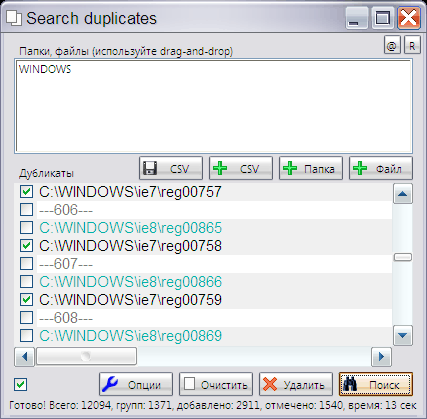
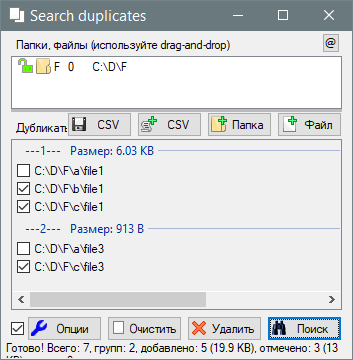

AutoIt3
Search_duplicates
Назначение
Поиск дубликатов файлов с уровнем приоритетов.


Взаимосвязанные
Search_duplicatesВерхнее поле программы позволяет принимать брошенные в него файлы и каталоги. Не следует перетягивать в окно программы большое количество файлов, так как при превышении общего числа символов более 3000 программа предупредит, что не все файлы добавлены в список. Если вы не используете эксплорер (проводник) или по каким то причинам перетягивание файлов в окно невозможно, то используйте кнопки "Папка", "Файл".
Далее используются кнопки "Поиск" и "Удалить". При поиске составляется список разделённый на группы. Первый элемент в каждой группе не отмечен галочкой, то есть позволяет оставить один дубликат файла. Статистика показывает количество проверенных файлов, количество групп дубликатов, количество добавленных в список, количество отмеченных галочкой для удаления и время поиска.
Кнопка "Очистить" - очищает оба поля для начала нового поиска.
В верхнем окне поиска при добавлении папок/файлов/csv слева иконка в виде замка. Клик по ней сопровождается переключением между заблокированным и разблокированным состоянием. Заблокированный элемент (и его вложенные файлы, если это папка) не помечается галочкой в списке результатов, соответственно эти файлы не удаляются. Этим вы можете предопределить поведение программы в выборе приоритета удаления дубликатов из каталогов. Также во второй колонке клик на числовом значении вызывает меню установки приоритета. Уровень приоритета позволяет определить, какой дубликат удалять в первую очередь. Например в 10 папках установлены приоритеты от 0 до 9. Если в группе будут 2 дубликата из каталогов с уровнем 5 и 6, то файл с уровнем 5 будет без галочки, а с уровнем 6 с галочкой и будет удалён.
Иногда требуется удалить файлы по списку контрольных сумм.
Плюсы этого метода:
Довольно частый случай сравнения двух файлов. Достаточно перетащить оба файла в верхнее поле и выполнить поиск.
Иногда требуется удалить файлы из определённого каталога, при этом в другом нельзя удалять. Для этого необходимо все каталоги, из которых нельзя удалять, перетащить в верхнее поле и создать список CSV. Далее очистить поля кнопкой "Очистить" и добавить в верхнее поле каталоги, в которых необходимо удалить дубликаты. Также добавить предварительно сохранённый список CSV и выполнить поиск и удаление. (Этот пункт утратил силу при введении приоритетов удаления, но всё же экономит время поиска при многократном сканировании)
Двойной клик в списке найденных файлов открывает файл в ассоциированной программе. В контекстном меню пункт "Открыть в проводнике" позволяет открыть каталог с этим файлом.
При использовании нескольких CSV-списков в группе не может быть более 2-x пунктов из CSV, так как сначала удаляются дубликаты в CSV-списках. Если используется один список CSV и вы сделали ручное объединение списков методом копирования одного в другой, то такой способ является неправильный и программа не проверяет такие ошибки. Причина: даже при желании сделать полную валидацию CSV-списка, этого не получится потому что пользователь может изменить размер и соответствие размера с хеш-суммой нарушится. Изменить формат CSV-списка методом изъятия размера и использовать только хеш-сумму - сильно замедлит программу, тем что придётся вместо 2-х этапной проверки файлов на дубликаты, (то есть сначала быстрая проверка по размеру и отсеивание большинства файлов, сэкономив на хешировании) делать в один этап - хеширование ВСЕХ файлов и проверка по хеш-сумме. Итак правило: CSV-списки соединять только через программу, при этом выполниться удаление дублей, если они присутствовали в разных списках, результирующий CSV-список будет без дублей.
В результирующем списке дубликатов будет всегда отсутствовать минимум одна галочка на первом пункте. Если используется CSV-список, то первым пунктом будет он, а все реальные дубликаты удалятся. Поэтому будьте осторожны, так как вы можете потерять все копии файла. CSV-список должен быть либо списком ненужных файлов, либо списком нужных файлов, но при наличии оригинальных копий и, конечно же, не использовать поиск в связке CSV-списка с оригиналами.
В группе используется сортировка по приоритету, поэтому устанавливая приоритеты всегда можно предопределить в каких папках будут удалены дубликаты, а в какой останется. Блокировка папки позволяет оставить дубликат именно в этой папке.
После первого удаления установка галочки выполняется для всех файлов игнорируя приоритеты, кроме CSV-списка, который по прежнему изначально не может быть удаляемым.
Маска определяет допустимые файлы поиска по имени. Символ * - подразумевает любое множество или отсутствие символов, знак вопроса ? - подразумевает один любой символ, разделитель | позволяет перечислить несколько масок поиска, например *.is?|s*.cp*. Неправильная маска предотвращает начало поиска, например, если в маске запрещённые символы. Если требуется конкретные имена файлов, то их следует перечислить через разделитель. Авто-коррекция маски позволяет исправить ошибки ввода, например пробел или точка в конце любого элемента маски игнорируются; ** тоже что и *
Этот параметр инвертирует маску, то есть происходит поиск всех файлов, кроме указанных в маске.
Параметр позволяет искать файлы либо только в корне указанной папки, либо во всех вложенных каталогах.
Так легче найти файл в списке, а также увидеть максимального размера файлы, которые будут удалены. Или наоборот пустые файлы, которые требуется исключить из удаляемых.
По умолчанию удаляет дубликаты в корзину. Иначе удаляет безвозвратно